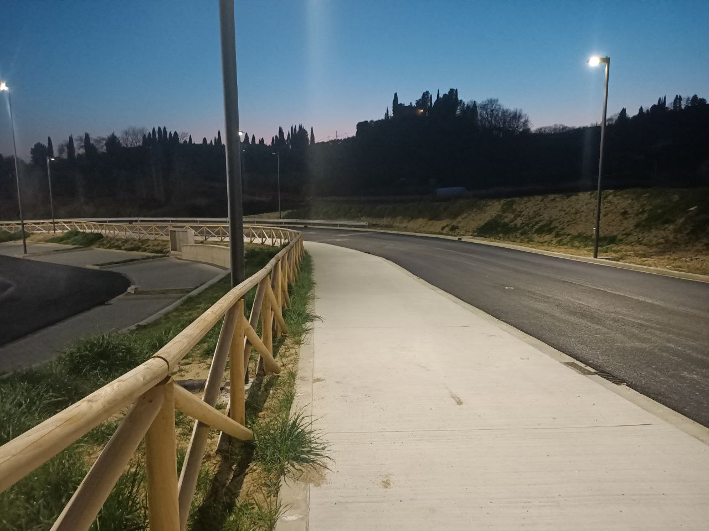
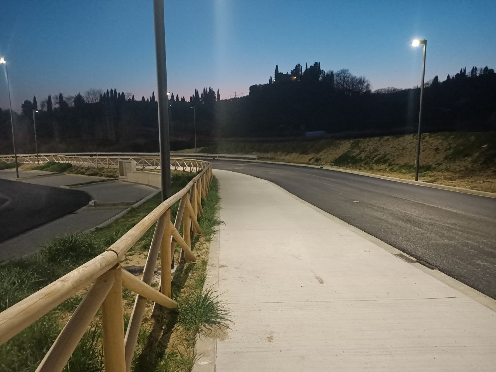

Specialisti in Edilizia e Movimento Terra
ContattaciChi Siamo
COES S.R.L., fondata nel 2009, è un'azienda specializzata in edilizia e movimento terra che ha costruito la sua reputazione su solide basi di professionalità e dedizione al lavoro. Nel corso degli anni, abbiamo costantemente migliorato le nostre competenze e capacità, ottenendo importanti certificazioni che testimoniano la nostra expertise nel settore.
La nostra affidabilità ed efficienza ci rendono un partner di fiducia sia nel settore pubblico che in quello privato. Per le stazioni appaltanti, rappresentiamo una garanzia di sicurezza e qualità. Nel settore privato, ci distinguiamo per la nostra capacità di soddisfare le richieste dei clienti, mantenendo sempre fede al nostro consolidato know-how.
In COES S.R.L., ogni progetto è affrontato con la massima attenzione ai dettagli e un impegno costante verso l'eccellenza. La nostra storia di successo è la testimonianza del nostro impegno nel fornire servizi di alta qualità, rispettando sempre i più elevati standard di sicurezza e efficienza.
I Nostri Servizi
Edilizia civile e industriale
Costruzioni e ristrutturazioni di edifici residenziali e commerciali.
Movimento terra
Scavi, livellamenti e preparazione del terreno per progetti di costruzione.
Lavori stradali
Costruzione e manutenzione di strade, ponti e infrastrutture correlate.
Opere idrauliche
Realizzazione di sistemi di drenaggio, canalizzazioni e opere di difesa idraulica.
Le Nostre Certificazioni
La nostra competenza è riconosciuta e certificata. Siamo orgogliosi di presentare le nostre certificazioni SOA e il nostro impegno per la qualità:
OG1 III
Edifici civili e industriali
OG8 II
Opere fluviali, di difesa, di sistemazione idraulica e di bonifica
OG3 II
Strade, autostrade, ponti, viadotti, ferrovie, metropolitane
ISO 9001
Sistema di Gestione per la Qualità
Lavori Eseguiti
Realizzazione Loculi Cimiteriali
Realizzazione loculi cimiteriali in San Giustino Umbro (PG)


Realizzazione Capannone Industriale
Realizzazione capannone nella zona industriale di Terranuova Bracciolini (AR)


Realizzazione pista ciclabile
Realizzazione pista ciclabile Toscana da Fiesole a Figline Valdarno
 

Realizzazione Parcheggio
Realizzazione Parcheggio Palazzetto dello sport in Terranuova Bracciolini (AR)


Realizzazione parcheggi e marciapiedi
Realizzazione parcheggi e marciapiedi nel comune di Selci Lama (PG)


Realizzazione Parco Urbano
Creazione di un'area verde con sistema di irrigazione innovativo
Contattaci
Siamo qui per rispondere alle tue domande e fornirti tutte le informazioni di cui hai bisogno.